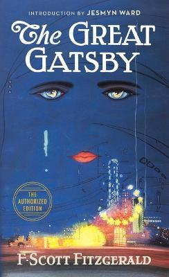
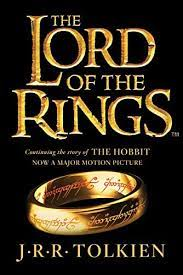
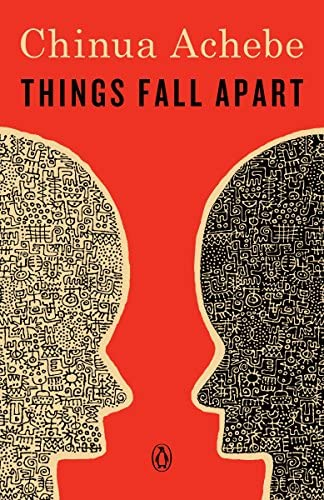

Books
Go back- F. Scott Fitzgerald, The Great Gatsby
- James Joyce, Ulysses
- J. R. R. Tolkien, The Lord of the Rings
- Chinua Achebe, Things Fall Apart

This is not only one of the greatest twentieth-century novels but one of the greatest novels of all time, and often appears near the top of any list of great novels. It was published in 1925 during the ‘Jazz Age’, and is narrated by Nick Carraway, who enters the moneyed world of the titular Jay Gatsby, who owns a large Long Island mansion and is known for throwing lavish parties.

Although it has a reputation as a ‘difficult’ work – and Joyce’s 1922 novel is around 800 pages representing the pinnacle of literary modernism in the novel form – Ulysses is actually a very democratic book, taking in all classes and stripes of Irish culture. It’s also set over the course of just one day, 16 June 1904, as we follow the ad man, Leopold Bloom, as he wanders around the city of Dublin. Breakfast, visits to the library and to the pub, sexual arousal, and trips to the lavatory all ensue in a work that was deemed too dirty to appear in Britain until the 1930s, more than a decade after Joyce finished writing it.

Sometimes named Britain’s favourite novel, The Lord of the Rings is a single novel – it was only published as a trilogy because of post-war paper shortages in the mid-1950s – in which Tolkien helped to create the blueprint for modern fantasy (although Tolkien’s work was itself standing on the shoulders of such earlier giants as William Morris and E. R. Eddison). The quest the hobbit Frodo Baggins undertakes to destroy the One Ring in the fires of Mordor has become many people’s best-loved book, and despite its flaws (find someone who actually likes the Tom Bombadil section – good luck!), it remains a classic work of twentieth-century fiction.

Written by the Igbo Nigerian writer Chinua Achebe and published in 1958 at a time when many African countries were gaining their independence from European countries, and the ‘winds of change’ were blowing through Africa (in Harold Macmillan’s memorable words), Things Fall Apart focuses on what life was like in Nigeria before the British arrived, and then what happened when they did, with disastrous consequences, in the late nineteenth century. Although written in English, the novel makes use of many proverbs from Igbo oral culture.